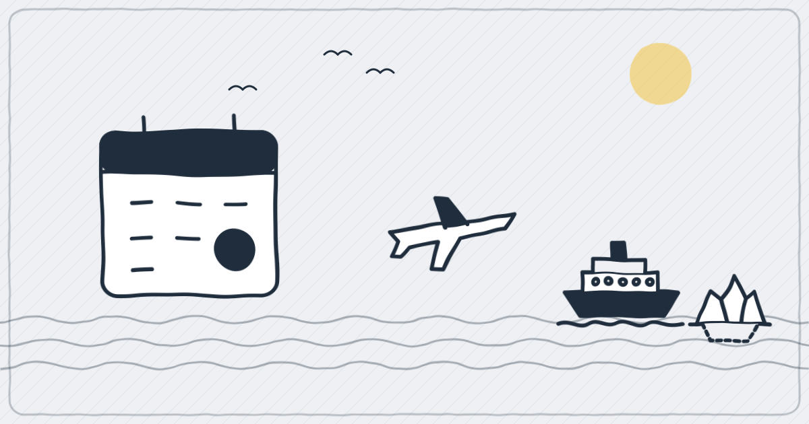

When to Book Flights for a 2027 Alaska Cruise
Lock in the 2027 Alaska cruise first, then buy flights. The whole 2027 season is already bookable, since airlines load schedules 11 to 12 months ahead, but cash fares on routes like Calgary or Toronto to Vancouver are usually best 2 to 6 months before sailing. Book sooner for points seats and for one-way flights home from Anchorage.

Book the ship before the plane. Cabins for the 2027 Alaska season went on sale in the summer of 2025 and the midship balconies go first, while flights to Vancouver and Seattle are plentiful and, on cash fares, usually cheapest two to six months before you sail. The exceptions worth moving on early are award seats on points and the one-way flight home from Anchorage.
Should you book the cruise or the flights first for Alaska 2027?
The cruise, every time, for three reasons:
- Cabins are the scarce thing. The cabins people want for a scenery cruise, midship balconies, sell out months ahead. Flights to Vancouver do not sell out; they just get pricier. The note on the best cabin, deck and side for Alaska explains which to grab.
- A cruise deposit is usually refundable; a cheap flight usually is not. Most standard cruise fares can be cancelled without penalty until final payment, often 75 to 90 days out. Basic economy and seat-sale airfares are non-refundable from day one.
- Dates can shift. If a better sailing or a price drop appears before final payment, you can often move the booking. Flights bought first turn that free move into a change fee.
How far ahead can you actually book 2027 flights?
Further than most people think. Airlines load schedules 11 to 12 months before departure: Aeroplan seats on Air Canada open roughly 355 days out, the large US carriers around 330 days. So by now the whole season, from the first Vancouver departures in late April 2027 to the last in late September, is bookable.
Bookable is not the same as cheap. Airlines open schedules with placeholder fares and adjust them as seats fill, so the price you see 11 months out is rarely the lowest.
If you are paying with points
Reverse the advice. Award seats at the lowest Aeroplan or WestJet Rewards rates are released in small numbers when the schedule opens, and on popular summer routes they go early. Search the day your cruise is confirmed and book what you find; award bookings are usually cheap or free to cancel, so you can rebook if a better flight appears.
When are flights to Vancouver cheapest for a summer cruise?
Work backwards from the sailing date. For a mid-July 2027 sailing:
- Now to early 2027: book the cruise, set fare alerts. Pick the sailing, pay the deposit, then set alerts in Google Flights or the airline apps for the day before sailing. Points users search award seats today.
- January to March 2027: watch the cruise, not the flights. Cruise promotions are heaviest early in the year and a deposited booking can often be moved to a better offer. July flights are still too far out to buy.
- February to May 2027: buy cash flights. Two to six months before departure is the usual sweet spot for Calgary, Edmonton, Kelowna and Toronto to Vancouver. Seat sales are common in this window; one landing in your alerts is the signal to book.
- Before final payment, around April 2027: decide on cruise line air. Get the line's protected flights priced before you pay in full, so you can compare like with like.
- Inside six weeks: stop waiting. Summer fares on Canadian domestic routes climb steeply in the final month.
- The day before sailing: be in Vancouver, hotel near Canada Place booked, nothing to do but find dinner.
For a May or September sailing the same order holds, but shoulder-season fares drift lower and you can sensibly buy a little later.
Which 2027 dates push flight prices up?
The expensive weeks are the ones when the whole country is trying to fly:
- Victoria Day, Monday 24 May. The first summer long weekend; Vancouver flights and hotels jump.
- Canada Day, Thursday 1 July. Many take the Friday too, making a four-day weekend.
- Late June to late August. Schools out across Canada and the US, so peak fares and peak cruise prices arrive together.
- The civic holiday, Monday 2 August. A busy Vancouver weekend in most provinces.
- Labour Day, Monday 6 September. The last summer rush; the week after is often the cheapest of the season.
Sailings that start on a long weekend look convenient and cost the most to fly to. A sailing a week either side can save a couple hundred dollars per person on airfare alone, before the cheaper cruise fare. The season's full price curve is in the note on what a couple really pays for Alaska from Vancouver.
Should you fly in the day before your Alaska cruise?
Yes. Ships leave Canada Place in the late afternoon and boarding closes before that, so a same-morning flight has no margin for a cancelled connection or a May snowstorm in Calgary (it happens). The day before turns a disaster into a long evening.
The Canada Line SkyTrain runs from YVR to Waterfront Station, a few minutes' walk from the pier, in about 25 minutes for a transit fare. A downtown hotel is C$200–400 at recent summer prices and books out on long weekends, so reserve it when you buy the flights.
Is cruise line air worth it for an Alaska sailing?
Flights sold with the cruise come with one thing you cannot buy separately: if the flight goes wrong, getting you to the ship becomes the line's problem. On the short Alberta-to-Vancouver hop, doing it yourself is usually cheaper and the risk is small. Cruise line air starts to make sense when you are connecting from a smaller airport with one flight a day, when you need a one-way flight home from Anchorage, where the line's negotiated fares are often competitive, or when the line's peak-season price is within a hundred dollars or so of what you can find yourself.
Quote both in the same week, and ask what the air add-on costs before you decide.
What about flying home from Anchorage after a one-way cruise?
Northbound Gulf of Alaska cruises end in Whittier or Seward, with a two- to three-hour transfer to Anchorage airport. Those flights are the ones to book early: Anchorage has far fewer seats than Vancouver, most routings connect through Seattle or Vancouver, and land tourists compete for them all summer.
Book an evening flight out of Anchorage, or stay a night: disembarkation plus the transfer rarely gets you to the airport before early afternoon. Compare an "open-jaw" ticket (into Vancouver, home from Anchorage) on one airline against two separate one-ways, because one-way fares are priced on their own and can cost more together than a round trip. Southbound sailings reverse the problem: you fly into Anchorage and home from Vancouver, which is the easier of the two to leave cheaply.
A booking order you can copy
Deposit the cruise. Search award seats the same day if you have points. Set fare alerts for the day before sailing and the day after disembarking. Buy cash flights two to six months out, sooner for Anchorage, and book the Vancouver hotel at the same time. Check the cruise price again before final payment, and insure the whole trip, flights included; the note on cruise travel insurance for Canadians explains why the flight portion matters.
Want this checked for your own sailing? A licensed cruise consultant can price it up and answer questions for free, with no obligation.
Ask a cruise expert →If you remember one line
Ship first, flights second, points and Anchorage early. Everything else can wait for a seat sale.
Questions people also ask
Can I book flights for a summer 2027 Alaska cruise now?
Yes. Air Canada, WestJet and the big US carriers open schedules roughly 11 to 12 months ahead, so by late 2026 every 2027 Alaska sailing date has flights on sale. Being able to book is not the same as needing to: short domestic fares rarely reward buying the day they appear.
How many days before an Alaska cruise should I fly to Vancouver?
Arrive the day before at the latest. A morning flight on sailing day leaves no room for a delay, and Canada Place boarding closes in the afternoon. From the east coast or anywhere with a connection, two nights before is the calmer choice and gives you a Vancouver day.
Is it cheaper to fly to Seattle or Vancouver for an Alaska cruise?
For Canadians, Vancouver, because flights are domestic and the ship is a short SkyTrain ride from the airport. For Americans, Seattle usually has more flights and lower fares, and no border on the way to the pier. Compare the whole trip, not the airfare alone.